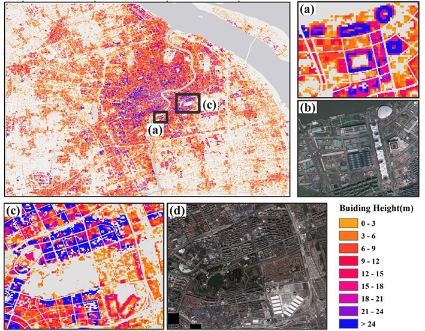
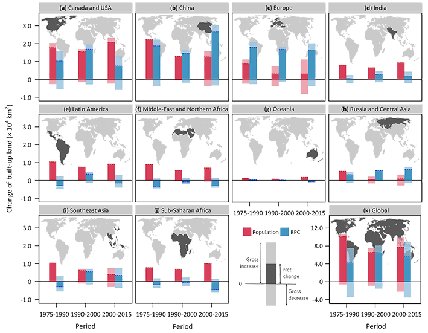

Our Publication #
- Guo, A., Yue, W., Yang, J., Xue, B., Xiao, W., Li, M.， He, T., Zhang, M., Jin, X., & Zhou, Q.. (2023). Cropland abandonment in China: Patterns, drivers, and implications for food security. Journal of Cleaner Production.
- He, T., Wang, K., Xiao, W.*, Xu, S., Li, M.， Yang, R., & Yue. W. (2023). Global 30 meters spatiotemporal 3D urban expansion dataset from 1990 to 2010. Scientific Data.
 - Li, M. (2023). Advancing large-scale analysis of human settlements and their dynamics. Doctoral thesis. Vrije Universiteit Amsterdam. ISBN: 9789464730586.
- Yue, W., Feng, B., Zhou, Q, Xu, R., & Li, M.*， (2023). An assesment of the Ecological Conservation Redline: unlocking priority areas for conservation. Journal of Environmental Planning and Management.
- Li, M., Wang, Y., Rosier, J.F., Verburg, P.H., & van Vliet, J.* (2022). Global maps of 3D built-up patterns for urban morphological analysis. International Journal of Applied Earth Observation and Geoinformation, 114, 103048.

- Guo, A., Yue, W.*, Yang, J., He, T., Zhang, M., & Li, M. (2022). Divergent impact of urban 2D/3D morphology on thermal environment along urban gradients. Urban Climate. 45, 101278.
- Wei, J., Yue, W.*, Li, M. ,& Gao, J. (2022). Mapping human perception of urban landscape from street-view images: A deep-learning approach. International Journal of Applied Earth Observation and Geoinformation, 112, 102886.
- Li, M.*, Verburg, P.H., & van Vliet, J. (2022). Global trends and local variations in land take per person. Landscape and Urban Planning, 218, 104308.
 - van Vliet, J.*, Birch-Thomsen, T., Gallardo, M., Hemerijckx, L. M., Hersperger, A. M., Li, M., Tumwesigye, S., Twongyirwe, R., & Van Rompaey, A. (2020). Bridging the rural-urban dichotomy in land use science. Journal of Land Use Science, 15(5), 585-591.
- Li, M.*, Koks, E., Taubenböck, H., & van Vliet, J. (2020). Continental-scale mapping and analysis of 3D building structure. Remote Sensing of Environment, 245, 111859.
- Li, M.*, van Vliet, J., Ke, X., & Verburg, P. H. (2019). Mapping settlement systems in China and their change trajectories between 1990 and 2010. Habitat International, 94, 102069.
# This research is primarily supported by China Scholarship Council, in the form of a Ph.D grant awarded to Mengmeng Li (collaborators: Jasper van Vliet, and Peter H. Verburg). We commit ourself as advocates of Open Science, all publications involved are therefore freely available in the format of either publisher's version or preprint version. Moreover, we highly value publication reproductivity, and datasets (if any) that support our findings are also freely accessible.
Related Publication By Peers
Password：